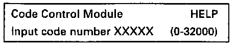
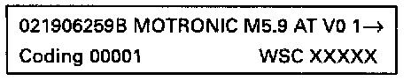

Code Control Module (scan tool function 07)
If the appropriate code for the vehicle is not displayed, or if the control module has been replaced, the control module must be coded as follows.Special tools, testers and auxiliary items
- VAG 1551/1552 scan tool with VAG 1551/3 adapter cable.
Work sequence:
- Connect the VAG 1551/1552 scan tool and with ignition switched on select "Engine Electronics" address word 01. [1][2][3]Connecting and Operating VAG 1551 Scan Tool
Indicated on display
- Press buttons -1- and -1- to select "Login-Procedure" function 11 and press -Q- button to confirm input.
Indicated on display
- Press buttons -0- , -1-, -2-, -8- and -3- to input log-in code 01283 and press -Q- button to confirm input.
Indicated on display
- Press buttons -0- and -7- to select "Code Control Module" function 07 and press -Q- button to confirm input.

Indicated on display
- Enter the appropriate code number for this vehicle and press -Q- button to confirm input.
Coding: For following vehicles:
00000 Golf/GTI/Jetta/Passat VR6 with manual transmission
00001 Golf/GTI/Jetta/Passat VR6 with automatic transmission

The VAG 1551 scan tool display will show the control module identification, e.g.:
- Press -> button.

Indicated on display
- Press buttons -0- and -6- to select "End Output" function 06 and press -Q- button to confirm input.
NOTE:
The code entered and shown on the display will not be used by the Engine Control Module (ECM) until the ignition has been switched off once. An incorrect coding leads to:
- Engine running malfunctions.
- Increased fuel consumption.
- Increased emissions.
- Malfunctions stored in Diagnostic Trouble Code (DTC) memory which are not actually present.
- Reduced transmission life.